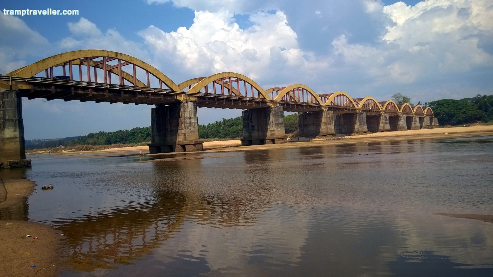
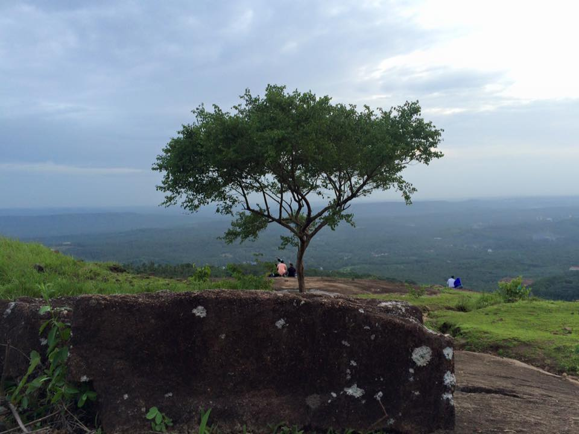
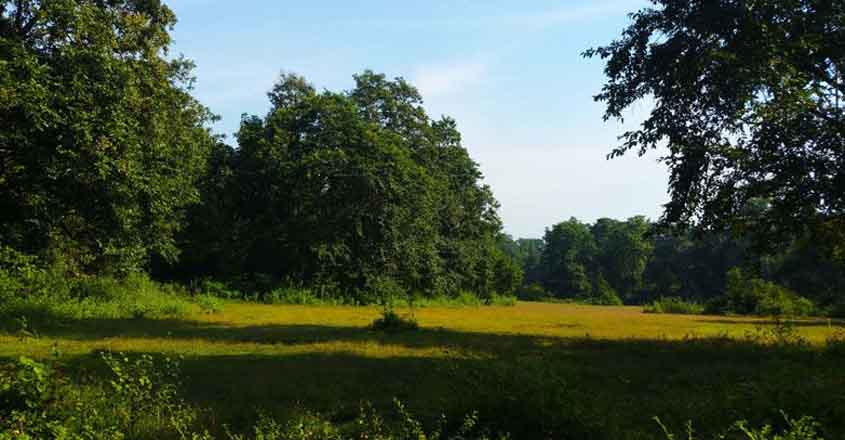
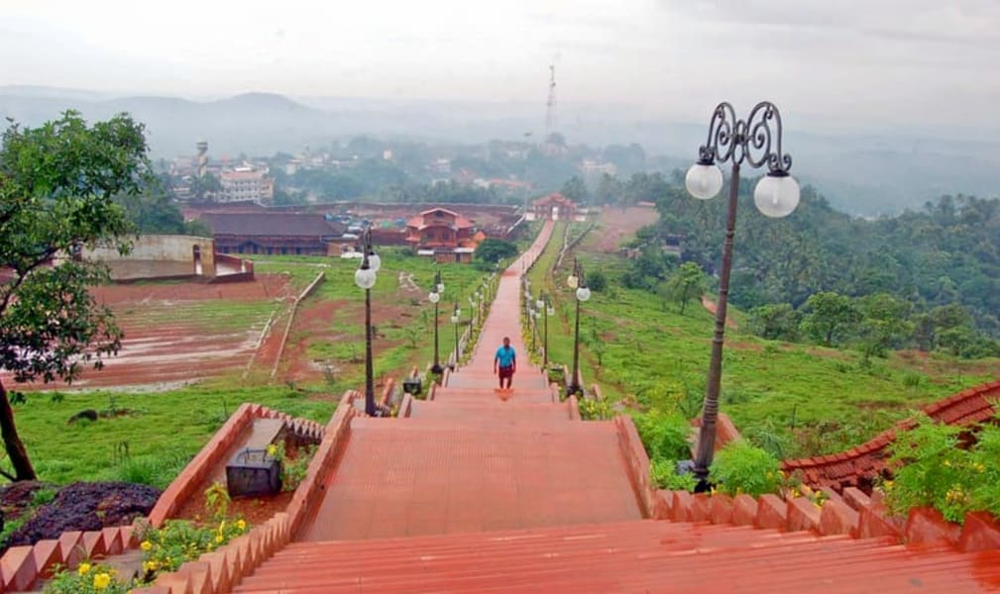
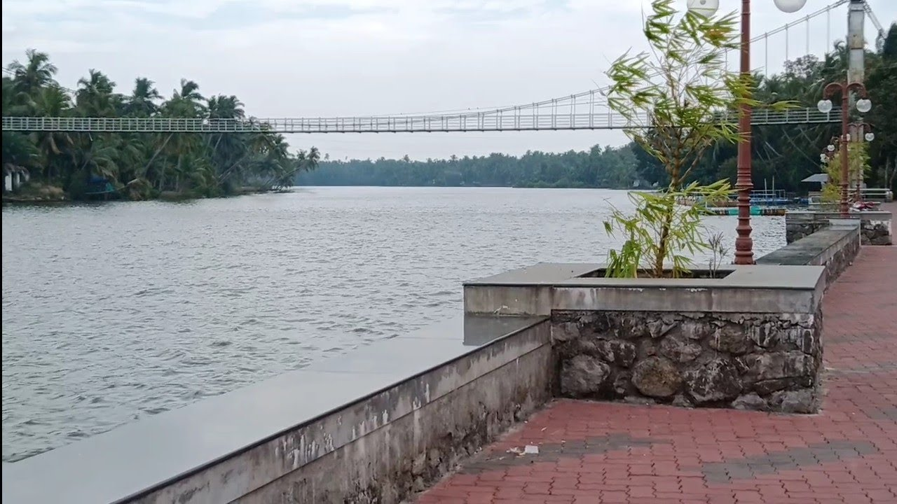

1. Bharathapuzha River
The River of Bharata, also known as Nila, the Bharathapuzha River is a west-flowing river in the state of Kerala, and is the second longest river in the state. The river has been an integral part of life in the southern regions of Malabar. The name Nila has been given to the river to show the importance of it being more than just a river, as there are several mentions of the river in the ancient Hindu scriptures.
All along the river, there are about 11 dams made to use its waters for the purpose of irrigation. Culturally, the river has an importance in a number of parts of the state, like the famous Kerala Kalamandalam which is housed on the banks of the river.
Location: Kerala
Timings: All day
Entry Fees: None
How to reach from city: Nearest railway station is Thirunavaya, about 2 km away

2.Kodikuthimala
Another attraction of Malappuram that is often compared to the famous town of Ooty, Kodikuthimala is definitely a sight for the sore eyes. A hill station of Kerala, the place is perched on a height of about 522 m above sea level, and is the highest point in the Amminikkadan hills.
Once the spot where the Britishers once hoisted their flag, the spot was opened for tourism only a few decades ago, with a large area of the place marked already for future development projects. There is a watch tower on the top of the hill from where tourists can get a panoramic view.
Location: Perinthalmanna taluk, Malappuram district, Kerala, India.
Timings: No time.
Entry Fees: None
How to reach from city: Take the road that takes you from Perinthalmanna which goes through Amminikkad.

3.Nedumkayam
A stretch of jungle near Malappuram, the Nedumkayam is famous for the rich foliage of rain forests. Home to a wide variety of flora and fauna, the dense jungles attract a number of tourists from nearby and around the country, who come here to take some of the most amazing photographs.
You can spot elephants, bison, tiger, rabbit, blue monkey, bear, wildcat and deer while you are on a visit here. The forests here are actually a part of the larger Nilgiri Biosphere Reserve. A great attraction here is the wooden rest house in the forest which was built during the colonial era.
Location: Malappuram, Kerala 679331
Timings: Everyday 9 AM to 4 PM
Entry Fees: INR 10 for adults and INR 5 for students
How to reach from city: The place is about 15 km from Nilambur, and hence can be reached by road.

4.Shanthitheeram Park
Shanthitheeram Park, or the Shanthitheeram Riverside Park to be specific, is known to be one of the most famous Malappuram Tourist Places and is a great spot to hangout for the locals, and tourists, alike. Located on the banks of the river Kadalundi, the park has a number of activities to offer.
You can be a part of the excitement of boating, that is available as both pedal boating and riding on a coracle (bowl boat), or as the locals call it, Kuttavanchi. You can also take up off-road ATV riding and much more while visiting here.
Location: Civil Station Rd, Down Hill, Malappuram, Kerala 676505
Timings: All day
Entry Fees: Free
How to reach from city: Take the road towards Civil Station Malappuram and keep driving through Collectorate to reach the park.

5.Biyyam Kayal
The region of Malappuram is full of backwater lakes created inland, and one of the most famous ones in the region is the Biyyam Kayal. Located close to Ponnani in the Malappuram district has recently been revamped to the status of an adventure zone of the area.
The local councils have set up facilities of a number of adventure and water sports here, like Speedboats and water scooter rides.
Apart from these, there are a number of rest houses on the bank of the lake as well, visited highly by locals at the time of Onam.
Location: Kanhiramukku - Biyyam Rd, Ponnani, Kerala 679576
Timings: Everyday, 6 AM to 8 PM
Entry Fees: Free
How to reach from city: You will find the lake at a distance of about 46 km from Malappuram as you ride towards Ponnani. You will have to get off the highway before Ponnani to get to the lake.